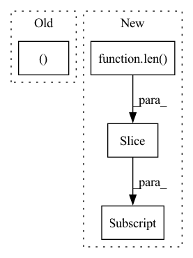

Pattern ID :32944
Before Change
if self.gate_type == "features":
self.scale = nn.Parameter(torch.ones((input_shape[-1],)), requires_grad=True).view(1, 1, input_shape[-1])
elif self.gate_type == "heads":
self.scale = nn.Parameter(torch.ones((input_shape[1]After Change
// Built einsum input strings
self.einsum_in_1 = "abcdef"
self.einsum_in_1 = self.einsum_in_1[:len(self.input_shape)]
self.einsum_in_2 = self.einsum_in_1[self.dim_to_scale]
print(f"{self.einsum_in_1},{self.einsum_in_2}->{self.einsum_in_1}")
In pattern: SUPERPATTERN
Frequency: 3
Non-data size: 4
Instances Fragment ID: 95434928
Project Name: antofuller/configaformers
Commit Name: 587753fa0f50da143bb3a3ad4da1d65e3ee72c60
Time: 2021-11-11
Author: afuller187187@gmail.com
File Name: norm_module.py
M Class Name: Gate
N Class Name: Gate
M Method Name: __init__(3)
N Method Name: __init__(3)
M Parent Class: nn.Module
N Parent Class: nn.Module
M File Name: norm_module.py
N File Name: norm_module.py
M Start Line: 106
M End Line: 123
N Start Line: 106
N End Line: 129
Before Change
for image_name in images:
image = image_dir_path / f"{image_name}.jpg"
features = {"image": str(image), "label": label}
yield image_name, features
After Change
files_to_keep = set(f.read().split("\n"))
for file_path, file_obj in images:
if file_path.startswith(_IMAGES_DIR):
if file_path[len(_IMAGES_DIR) : -len(".jpg")] in files_to_keep:
label = file_path.split("/")[2]
yield file_path, {
"image": {"filename": file_path.split("/")[-1], "data": file_obj.read()}, Fragment ID: 95434922
Project Name: huggingface/datasets
Commit Name: 0ef629cdda4aaab151a792ff29c879f4fcf7f4f4
Time: 2021-10-18
Author: 42851186+lhoestq@users.noreply.github.com
File Name: datasets/food101/food101.py
M Class Name: Food101
N Class Name: Food101
M Method Name: _generate_examples(3)
N Method Name: _generate_examples(3)
M Parent Class: datasets.GeneratorBasedBuilder
N Parent Class: datasets.GeneratorBasedBuilder
M File Name: datasets/food101/food101.py
N File Name: datasets/food101/food101.py
M Start Line: 186
M End Line: 191
N Start Line: 206
N End Line: 215
Before Change
cast(subset_name.split("_")[1], int) is not None:
num = subset_name.split("_")[1]
filename = CifarPath.TRAIN_ANNOTATION_FILE + num
batch_label = "training batch %s of 5" % (numAfter Change
batch_label = None
if subset_name.startswith(CifarPath.TRAIN_FILE_PREFIX):
num = subset_name[len(CifarPath.TRAIN_FILE_PREFIX):]
if cast(num, int) is not None:
batch_label = "training batch %s of 5" % num
elif subset_name == "test":
batch_label = "testing batch 1 of 1" Fragment ID: 95434925
Project Name: openvinotoolkit/datumaro
Commit Name: 8eaa9e733ceda59d1290db909359e972e820b5e1
Time: 2021-07-15
Author: maxim.zhiltsov@intel.com
File Name: datumaro/plugins/cifar_format.py
M Class Name: CifarConverter
N Class Name: CifarConverter
M Method Name: apply(1)
N Method Name: apply(1)
M Parent Class: Converter
N Parent Class: Converter
M File Name: datumaro/plugins/cifar_format.py
N File Name: datumaro/plugins/cifar_format.py
M Start Line: 155
M End Line: 236
N Start Line: 159
N End Line: 250